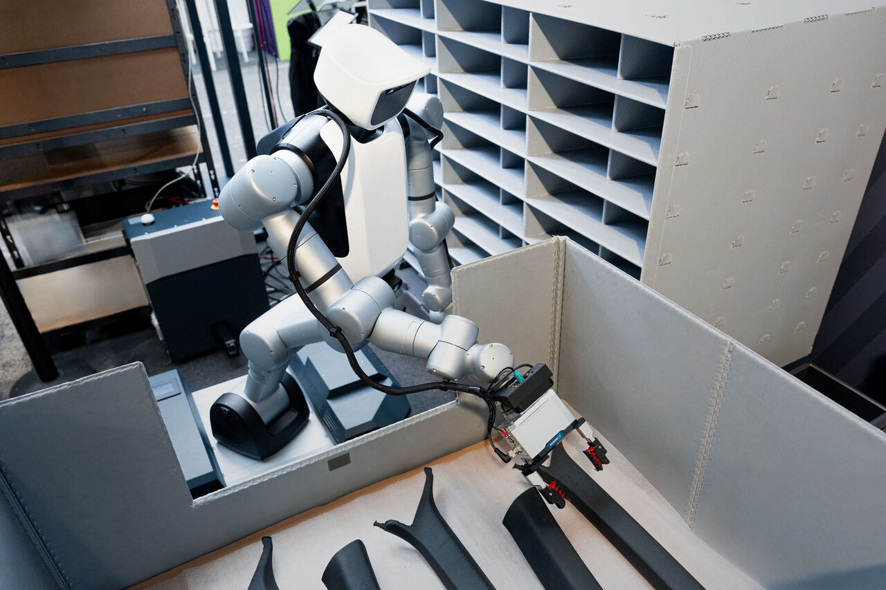

| 重点新闻 |
本期主条 NVIDIA GTC 柏林：Isaac 扩容并发布 Agile ONE SN 参考人形（Jetson Thor + GR00T） 10月21日，NVIDIA 新闻稿称 GTC 柏林发布 Isaac 平台重大更新：Agile Robots 推出预装 Isaac GR00T、搭载 Jetson Thor 的 Agile ONE SN 参考人形（31 DOF 机身、双 WUJI Hand 2、多模态传感），目标 2027 年初供研究机构使用；同步 GA Isaac Lab 3.0、开源 Isaac OS 运行时，并发布 Human 1M 等数据集与 Halos 安全栈合作名单（含 Agility、Agile Robots 等）。编辑判断：参考机 + 统一 sim-to-deploy toolchain 意在缩短「论文技能—客户 KPI」周期；产业读者应跟踪 Halos 与第三方 field evaluation 的绑定深度，而非仅统计 DOF 与 TFLOPS。 NVIDIA |
舍弗勒太仓人形灯塔工厂投运：六台人形装配下一代关节模组 10月20日，舍弗勒集团通稿宣布太仓约 7500 ㎡ 人形机器人灯塔工厂启用，集成智能装配线、训练与数据采集中心、数字孪生平台与数据中心；六台人形在五工位协作完成线性/旋转执行器等关节模组的分拣、装配、检测与包装，并面向全球约 100 座制造工厂场景做技能训练。通稿称 Q3 2026 大中华区新增两家人形客户，全球在手订单约 4 亿欧元。编辑观点：「人形造人形」闭环把零部件 MTBF 与整机 uptime 绑在同一产线 KPI；对主机厂而言，关键在能否获得与 Newton/Isaac 生态交叉验证的第三方工时数据，而非只看开园仪式。 Schaeffler Group |
 Audi × Agile Robots × 达索 × NVIDIA：英戈尔施塔特排序 PoC 启动 10月21日，奥迪官方新闻稿称，GTC 柏林 上四方宣布在英戈尔施塔特 Production Lab 启动 PoC：Agile Robots 移动人形从料箱拣选零件并按装配顺序投料，日产约 100 万次拣选量级下的排序场景；先以达索 DELMIA 与 3DEXPERIENCE 工业世界模型 + NVIDIA Omniverse 建物流虚拟孪生，再落地 smart intralogistics。稿引供应链负责人称，高混线 unsorted 料箱拣选长期是自动化难点。编辑判断：德系 OEM 把「排序」而非静态搬运作为首测，意味着验收将围绕节拍、错件率与安规联锁；应等待虚拟孪生—实机 KPI 是否公开可对账。 AUDI AG |
2026 世界物理 AI 大会在杭举行：王兴兴发布世界物理 AI 大赛 10月22日，第一财经援引证券时报称，2026 世界物理 AI 大会暨宇树合作伙伴生态大会在杭州国际博览中心举行，王兴兴主旨演讲披露 G1 累计下线约 1 万—2 万台、明确量产/物理 AI 小模型/算力集群三大方向，并发布面向全球、设八大赛道、每年数千万元奖金的世界物理 AI 大赛；现场展示 Dex5-S 灵巧手与多行业场景方案。编辑观点：大会是生态战而非单机发布；产业读者应跟踪大赛赛题是否绑定可公开 telemetry 与失败片段，以及开源模型权重与硬件 BOM 的对齐版本号。 第一财经 |
Figure 03 跑步机耐久测试：9 天 348 英里、120 万步（CEO 披露） 10月19日起，Figure CEO Brett Adcock 在 X 连续更新称 Figure 03 在实验室跑步机完成 9 天、约 348 英里（560 km）、120 万步的 stress test，旨在暴露机械失效；公开视频可见外接线缆，Figure 未说明是否单台不间断、是否轮换维护或外接供电细节。Interesting Engineering 等科技媒体 19—20 日跟进报道并引用 Adcock 帖文。编辑判断：该测试衡量重复步行机构的耐久，不能直接映射为 9 天电池续航或仓内自主 SLA；读者应要求 Figure 公布换机/维护日志与等效产线 shift 换算。 Interesting Engineering |
110 台人形机器人济南同步起舞创吉尼斯世界纪录 10月24日，环球时报英文稿称，110 台中国人形机器人在山东济南集体舞蹈，获吉尼斯「最多人形机器人同时起舞」认证；稿未披露整机厂商与型号。编辑判断：大规模群控考验时钟同步、无线通信与故障隔离策略，与单台灵巧操作指标不同；活动组织方若面向文旅/公共服务复制，应公开通信架构、单点失效切换与现场安保预案，而非仅读纪录数字。 环球时报 |